TascPro¶
Introduction¶
The successful integration of TascPro with Slack and Hubstaff, will enable the following:
- Convert a private Slack channel to a hubstaff project
- Create a new task for a project inside the relevant slack channel
- Check all the incomplete tasks in a project using info shortcut
- Dashboard
Convert a private slack channel to a hubstaff project¶
- Create a new private channel by clicking on
Add Channelsbutton - Name the channel
-
Toggle Make private checkbox
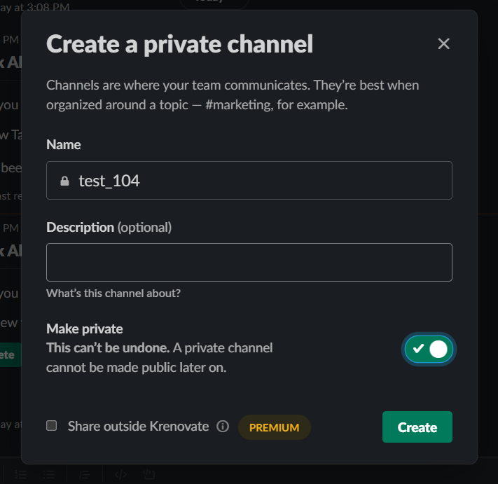
-
Make sure to add all the people who are associated with the project.
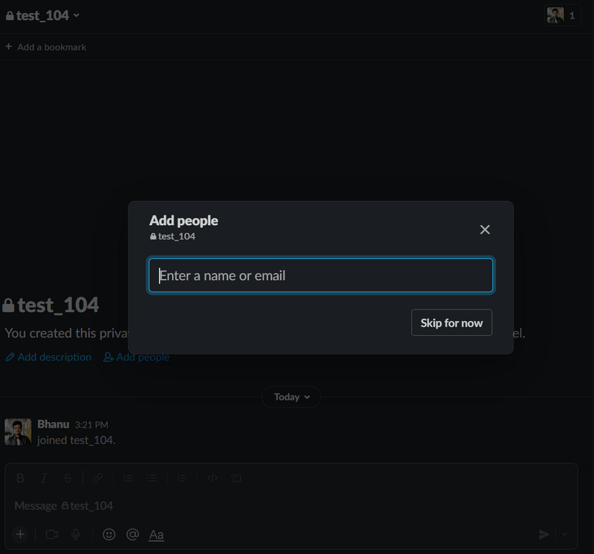
- Add tascpro in the channel
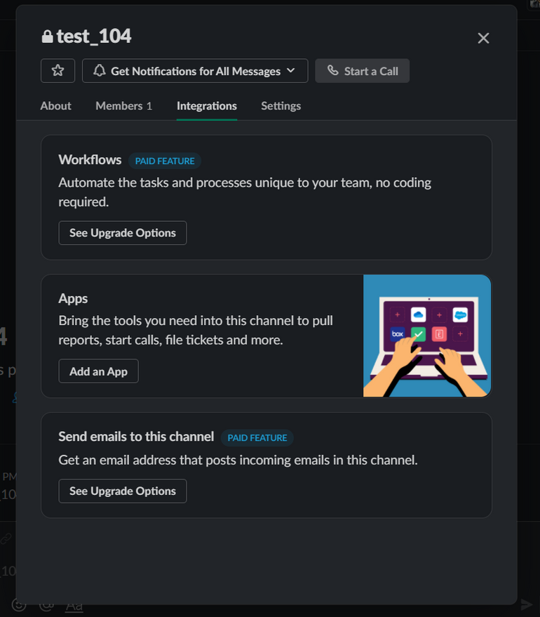
-
Click on
Add an Appand add TascPro app.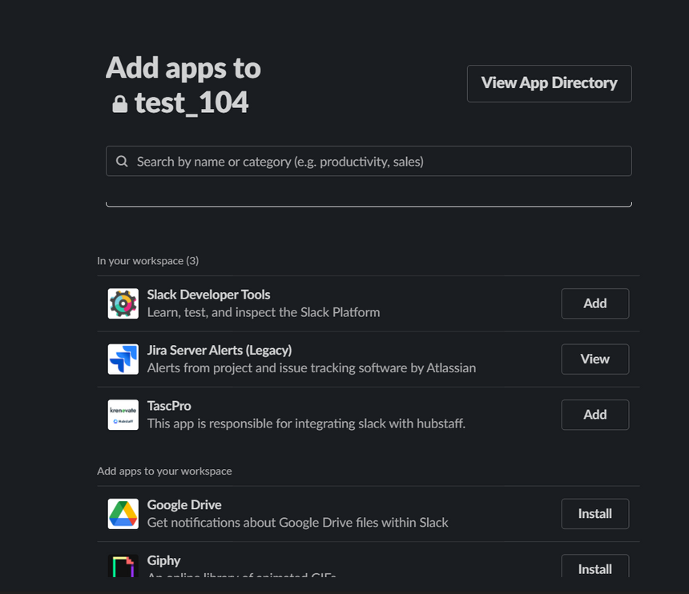
-
Once added you can convert the channel to a project.
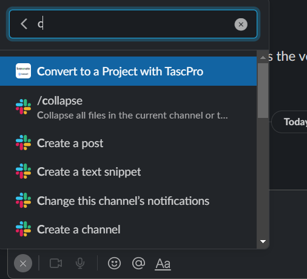
-
Hit on Make Project on the popup that comes.
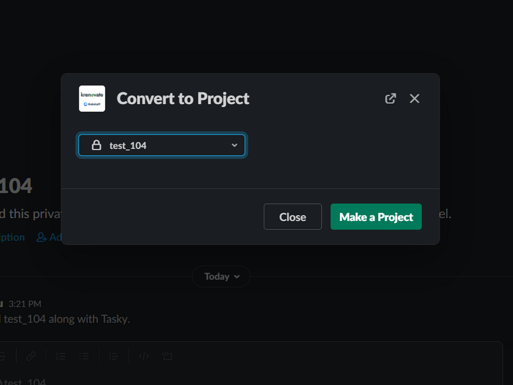
-
You will see the notification from TaskPRO which says, that project has been created.
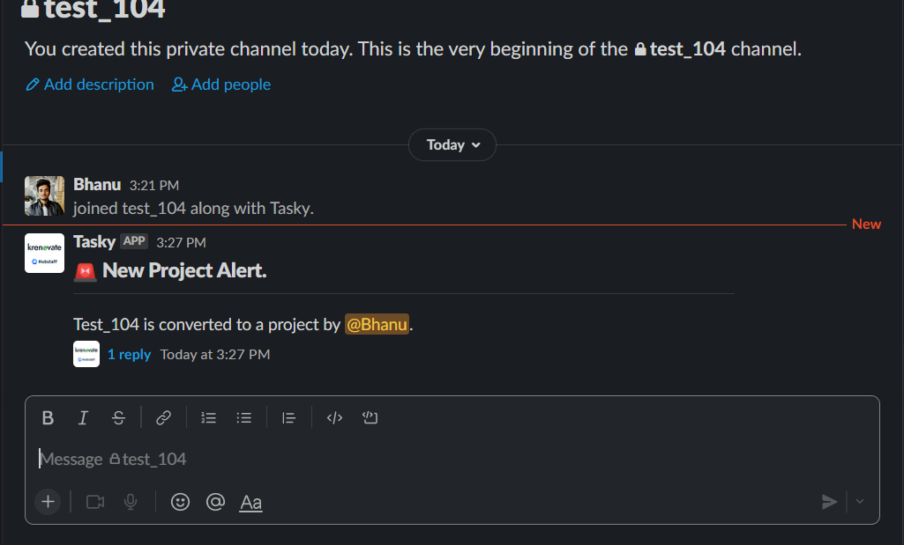
Create a new task for a project inside the relevant slack channel¶
- Search for a shortcut called
Add a new Taskand click on it as you did with project shortcut -
Enter the title of the task, add the user to whom you want to allot the task. Imp - Make sure that the user is in the channel where you are creating the task. Then hit on
Add Taskbutton.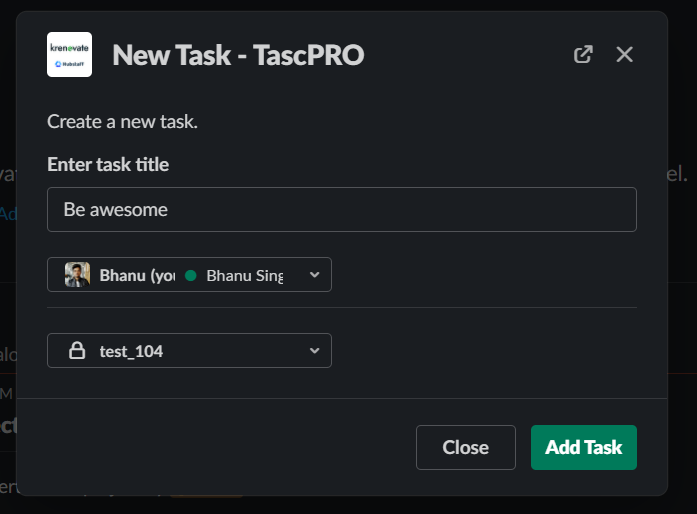
-
Upon successful addition of the task you will get the notification that the task has been created.
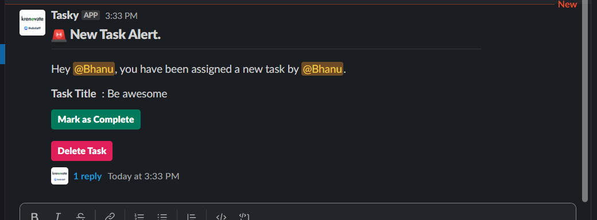
-
You can use
Mark as completebutton to mark the task as completed andDelete Taskbutton to delete the task. -
If you are the one who has been assigned the task, you should see the task in your hubstaff desktop client.
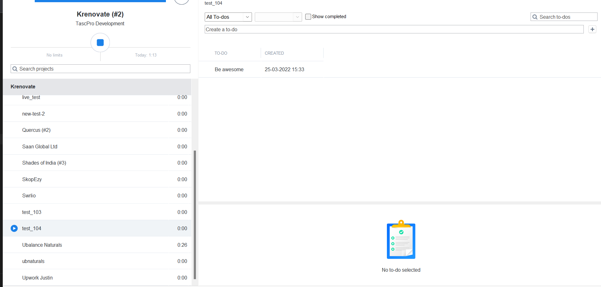
These changes are instant, you don’t have to wait for them to appear, as you had to do with Jira.
Check all the incomplete tasks in a project using info shortcut¶
You can use the /info command to get all the tasks in a project.
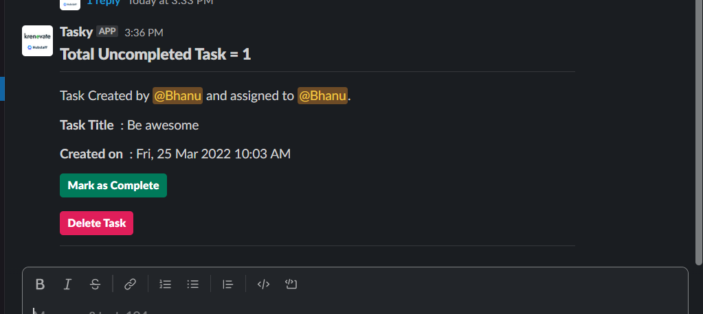
The command shows total incomplete tasks.
Dashboard¶
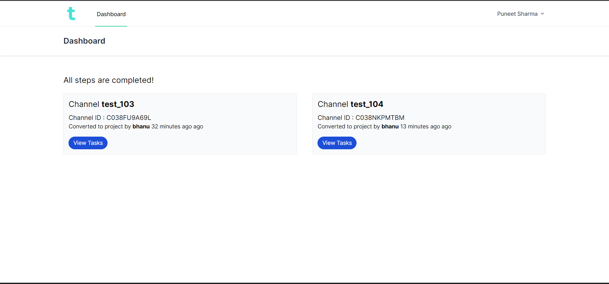
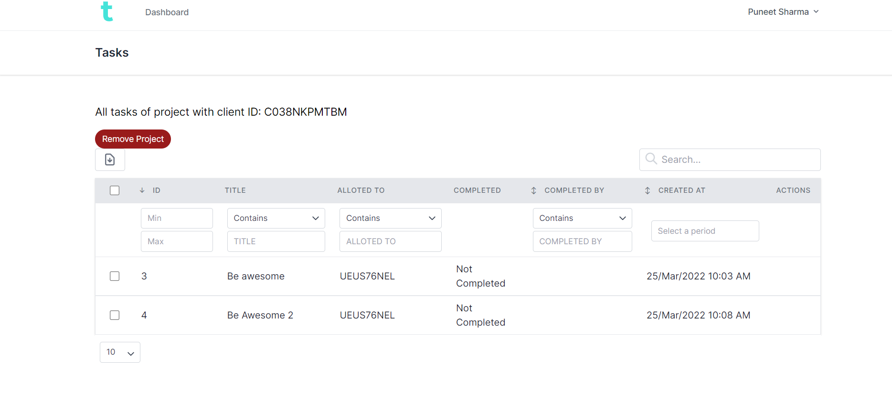
You will be able to see all the projects and tasks within the project.